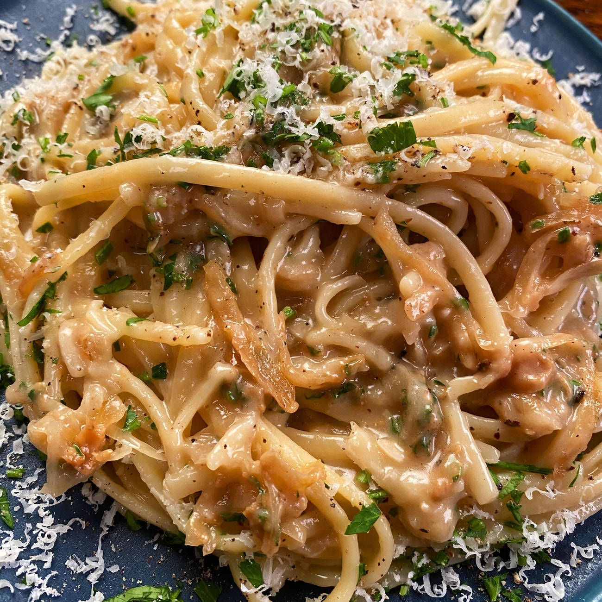

Caramelized Onion Pasta
This hearty pasta dish is easy to make as it uses a storebought vodka sauce as its base. It requires only three ingredients outside of the jar of pasta sauce and the pasta itself.
Ingredients:
- One large yellow onion, chopped
- Two medium vine tomatoes, cut into eighths
- One teaspoon butter
- One jar Bertolli vodka sauce
- Linguine, spaghetti, or other pasta, as preferred
Steps:
- In a heavy saucepan, melt the butter over medium-high heat
- Add chopped onion. Stir for 2-5 minutes. Continue stirring as onion caramelizes and browns
- Add tomatoes, stirring continuously until tomatoes begin to break down
- Add jar of pasta sauce. Stir. Reduce heat to medium
- In a separate large pot, start heating 4 quarts of salted water to a boil
- Allow the pasta sauce to cook over medium heat for 5 minutes, stirring occasionally
- Reduce heat on pasta sauce to med-low. Cover, continuing to stir occasionally
- Once water is at a rolling boil, add pasta and stir occasionally as it cooks to prevent sticking
- Cook pasta to desired tenderness. Drain and portion into bowls.
- Add parmesean cheese or red pepper flakes to taste